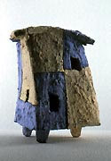
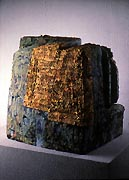
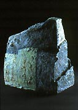
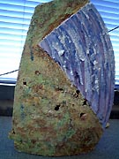
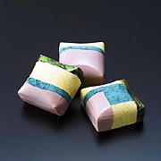
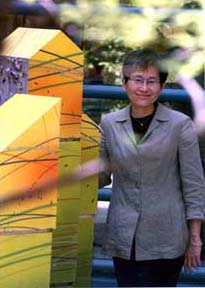

| Itsue ITO
Japanese ceramist.

Ito Itsue is a Japanese ceramist resident in Japan and the USA.
She is a member of the American Crafts Council, the International
Academy of Ceramics, the Japan Association of Artists, Craftsmen
and Architects and NCECA.

Ito studied under Yanagihara Mutsuo at Osaka University of Fine
Arts, earning a BFA in 1979 and in the USA under Jim Tanner and
Roy Strassberg at Minnesota State University, Mankato, earning an
MA in 1981 and under Joe Bova at Louisiana State University, earning
an MFA in 1983. She established a studio in Miyazaki, Japan in 1988,
where she makes slab and coil-built abstract sculpture. Her works
are inspired by childhood memories of the blue-green colours (in
Japanese ‘AO’) of the landscape of Miyazaki and her
childhood home, symbolising ‘shelter’. Underglazes and
slips are used for surface decoration and works are fired multiple
times.

Her
residencies include the European Ceramic Work Center (EKWC) in s’Hertogenbosch,
The Netherlands in 1997, the Shigaraki Ceramic Cultural Park in
Japan in 1998, the International Ceramic Studio in Kecskemet, Hungary
in 2001, Vallauris, France in 2002 and the Ceramic Development Center,
Lampang, Thailand in 2004.

More Artists of the Week
More Articles
|
{kind=link}
{kind=link}
{kind=link}
{kind=link}
{kind=link}